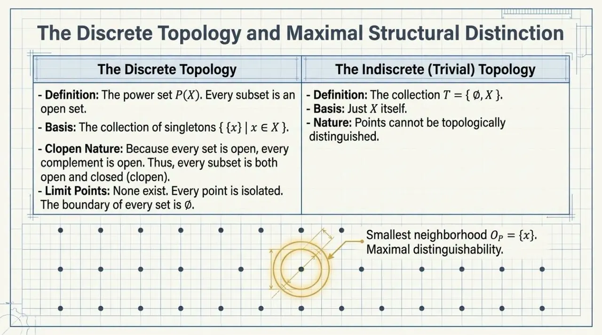

기둥 1 · 공간을 나누는 법 · 02장
이산 위상과 밀착 위상 — 모두 혼자 vs 모두 한 덩어리
열린 집합 목록이 가장 많을 때와 가장 적을 때
열린 집합 목록이 가장 많을 때와 가장 적을 때
핵심 질문 — 같은 점들의 모음에 열린 집합을 「전부」 주는 것과 「거의 안 주는」 것은 어떻게 다를까?
01장에서 같은 집합 {1, 2, 3}에도 위상이 여러 가지라고 했어요. 그중 양 끝이 이산 위상(모든 부분집합이 열림)과 밀착 위상(∅과 전체만 열림)이에요. 이 시리즈의 큰 주제가 바로 이 「이산」이라는 생각입니다.
숫자 요약은 이 장의 예시 계산에서 나온 값입니다(실제 데이터가 아닌 설명용 값).
오늘은 토론입니다. 시아는 「모두 혼자」, 모아는 「모두 한 덩어리」 편이에요.
한 덩어리가 최고예요! 사이좋게!
행렬·벡터, 복잡한 공식을 몰라도 됩니다. 그림을 움직여 보고, 밑줄 친 말을 누르면 뜻이 나옵니다.
이 페이지 사용법: 밑줄 친 말을 누르면 뜻이 나옵니다(Esc로 닫기). 단계마다 그림을 직접 움직여 보고, 끝의 확인 퀴즈로 점검하세요. 앞 장: 01 열린 집합 — 이웃을 정하는 규칙
인턴 시아는 「점마다 혼자인 이산 위상」 편, 인턴 모아는 「모두 한 덩어리인 밀착 위상」 편을 맡아 맞붙어요. 조교는 근거가 맞는지 점검하고, 박사가 정리합니다.
이산 위상에서는 점 하나하나가 자기만의 열린 방을 가져요. 누구도 헷갈리지 않죠.
밀착 위상에선 열린 집합이 딱 2개라 외울 게 없어요. 엄청 편하죠?
원자료 인포그래픽의 세 기둥은 모두 「이산 공간」에서 갈라져 나와요. 이산 위상을 알면 나머지 장의 방향이 보여요.
이산(가장 촘촘)과 밀착(가장 엉성) 사이에 모든 위상이 놓여요. 양 끝을 알면 중간을 비교할 수 있어요.
「모든 공간에서 성립할까?」 싶은 주장을 시험할 때, 두 극단을 넣어 보면 많은 것이 걸러져요.
오늘 나오는 「열리면서 닫힌 집합」은 이름이 이상해 보여도 괜찮아요. 문과 담이 동시에 되는 울타리라고 생각하면 됩니다.
상황 질문 — 기숙사에서 모든 학생이 혼자 방을 쓰면, 「누구와 누구가 같은 방인가?」를 물을 일이 있을까요?
2³, 2⁴처럼 2를 거듭제곱하는 건 왜 나와요?
학교 수학으로 보면: 중학교 「경우의 수」와 같아요. 점마다 「넣는다 / 안 넣는다」 두 가지를 고르니까 점이 n개면 2를 n번 곱해요.
| 식 조각 | 읽는 법 | 뜻 |
|---|---|---|
| P(X) | 엑스의 멱집합 | X의 부분집합 전부 |
| {x} | 점 x 하나짜리 집합(한원소 집합) | 이산 위상의 「1인실」, 기저 |
| 2ⁿ | 2의 n제곱 | 점 n개 집합의 부분집합 개수 |
X = {1, 2, 3}: 넣기/빼기 2 × 2 × 2 = 8 → ∅, {1}, {2}, {3}, {1,2}, {1,3}, {2,3}, {1,2,3}
이산 위상에서는 8개 모두 열린 집합
{1}의 바깥 {2, 3}도 열려 있음 → {1}은 닫힌 집합이기도 함
전부 열려 있으니까 바깥도 열려 있고, 그래서 전부 닫혀 있기도 한 거군요. 신기해요!
1인 1실 기숙사에서는 어떤 학생 무리든 방 몇 개를 합쳐 만들 수 있고, 남은 학생들도 방을 합쳐 만들 수 있어요.
이산 위상에서는 모든 부분집합이 열려 있고, 그 바깥도 열려 있으니 모든 집합이 열리면서 닫힌 집합이에요. 극한점(다른 점이 다닥다닥 몰리는 점)이 없고 모든 경계가 ∅이에요.
「이산(전부)」를 눌러서 닫힌 집합이 몇 개인지 보세요.
열린 집합 8개, 닫힌 집합 8개, 합치면 16개!
같은 8개가 두 번 세어진 거야. 열리면서 닫힌 집합 수를 봐.
원자료 「The Discrete Topology and Maximal Structural Distinction」의 왼쪽 표와 아래 격자 그림(작은 이웃 O_P = {x}).

상황 질문 — 반 전체가 똑같은 단체 티셔츠를 입고 멀리서 보면, 두 친구를 구별할 수 있을까요?
단체 티셔츠를 입은 반을 멀리서 찍으면, 사진 틀에 늘 「아무도 없음」이나 「반 전체」만 들어와요. 누가 누군지 구별할 수 없어요.
밀착 위상 {∅, X}에서는 서로 다른 두 점을 갈라 놓는 열린 집합이 없어요. 위상의 눈으로는 모든 점이 같은 자리에 있는 것처럼 보여요.
밀착 위상에서 점 1과 2를 골라 보세요. 갈라 놓을 수 있나요?
음… 열린 집합이 ∅과 전체뿐이라 어느 쪽도 한 명만 담지 못하네요.
「중간」 위상도 눌러 봐. 한쪽만 구별되는 묘한 경우가 나와.
원자료의 오른쪽 표 「The Indiscrete (Trivial) Topology」: T = {∅, X}, 점을 위상적으로 구별할 수 없음.
상황 질문 — 사진 해상도를 아주 낮게(밀착) 하면 모두 한 덩어리, 아주 높게(이산) 하면 픽셀 하나하나가 보이죠. 그 중간 해상도는 몇 단계나 있을까요?
2^(2^3)이라는 건 지수 위에 또 지수예요? 어떻게 읽어요?
학교 수학으로 보면: 거듭제곱을 두 번 한 거예요. 안쪽 2³ = 8을 먼저 하고, 2⁸ = 256을 계산해요. 위에서부터 계산합니다.
| 식 조각 | 읽는 법 | 뜻 |
|---|---|---|
| 2^(2ⁿ) | 2의 2의 n제곱 제곱 | 부분집합 모음(목록 후보)의 개수 |
| 29 | 이십구 | 점 3개일 때 세 규칙을 지키는 목록 수 |
| 355 | 삼백오십오 | 점 4개일 때 |
점 3개 → 부분집합 8개 → 목록 후보 2⁸ = 256개
세 규칙으로 걸러 남는 위상: 29개 (가장 적게 열린 밀착 2개짜리 ~ 이산 8개짜리)
점 4개 → 후보 2¹⁶ = 65,536개 → 위상 355개
후보 256개를 손으로는 못 하겠지만, 규칙이 셋뿐이라 컴퓨터가 하나씩 확인하는 건 쉽겠네요.
사진 해상도를 올리면 구별되는 물건이 많아져요. 하지만 「어느 부분을 먼저 선명하게 할지」에 따라 같은 해상도에도 여러 사진이 나와요.
위상끼리는 「열린 집합 목록을 포함하는가」로 촘촘함을 비교해요. 밀착이 가장 엉성하고 이산이 가장 촘촘하며, 점 3개면 그 사이를 포함해 모두 29가지가 있어요.
점 개수를 1부터 4까지 올려 보세요. 위상 수가 어떻게 늘어나나요?
1, 2, 4, 8… 두 배씩이겠죠!
그건 부분집합 수야. 위상 수는 직접 세어 봐야 알아.
모아가 AI에게 「이산 위상에서 닫힌 집합은 몇 개인가요? (점 3개)」라고 물었어요.
AI가 정의를 일상어로 바꿔 말할 때(「반대」, 「아닌 것」) 특히 조심하세요. 정의 문장으로 돌아가 한 번만 확인하면 됩니다.
{1, 2, 3, 4}에 이산 위상을 주면 열린 집합이 몇 개인지를 두고 계산배틀이 붙었어요.
「16개. 점마다 넣을지 뺄지 두 가지니까 2⁴.」
「점 4개니까 두 배 해서 8개!」
누가 맞을지 먼저 예상해 보고 단추를 누르세요. 판정은 계산 결과로만 합니다.
개념정리 흐름: 이산 위상 → 밀착 위상 → 위상의 촘촘함과 개수
| 개념 | 한 줄 뜻 | 일상 비유 | 비유의 한계 |
|---|---|---|---|
| 이산 위상 | 모든 부분집합이 열림 | 1인 1실 기숙사 | 현실의 「점」은 크기가 있지만 수학의 점은 크기가 없어요 |
| 밀착 위상 | ∅과 전체만 열림 | 단체 티셔츠 반 | 실제로 구별이 불가능하다는 뜻이 아니라, 이 위상이 구별 정보를 안 준다는 뜻 |
| 열리면서 닫힌 집합 | 열려 있고 바깥도 열린 집합 | 문이자 담인 울타리 | 이산 위상 밖에서도 생겨요(14장의 끊긴 공간) |
| 위상의 촘촘함 | 목록을 포함하면 더 촘촘 | 사진 해상도 | 해상도는 한 줄로 줄 세울 수 있지만 위상은 서로 비교 못 하는 경우도 있어요 |
오늘의 토론 결과: 무승부. 이산과 밀착은 「구별하는 힘」의 양 끝일 뿐 좋고 나쁨이 없어요.
그래도 이 시리즈의 주인공은 이산 위상이죠?
밀착 위상은 반례 담당이라 할게요. 그것도 멋져요!
다음 시간은 조별 과제래!
다음 장 예고: 03장에서는 조별 과제로 「한 덩어리인가, 끊겨 있는가」를 판정해요. 이산 공간이 왜 「완전히 끊긴」 공간인지도 확인합니다.